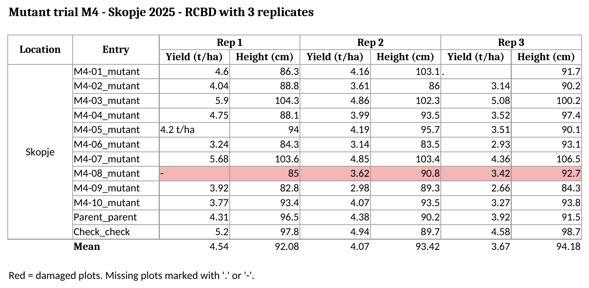

[1] 2.933333Regional Training Course on Experimental Design and Data Analysis for the Advancement of Mutant Populations (RER5030)
4 November 2026
| Time | Activity |
|---|---|
| 0:00 to 0:10 | Welcome and questions from Session 1 |
| 0:10 to 1:15 | Blocks 1 to 5. Messy and tidy data, from messy to tidy in R, the course template |
| 1:15 to 1:45 | Block 6. Digital data collection: Field Book and GridScore NEXT |
| 1:45 to 2:00 | Homework, your dataset and questions |
Goal of today: every participant leaves knowing how to prepare their own dataset for the course.
Why data organization matters
A field book that is easy to read for a person (titles, merged cells, colours, totals) is usually very hard to read for a computer.
If the data are organized well when they are recorded, the analysis in R is a few lines of code.
Three plots of the same mutant line. The third plot was lost.
With the
0, the mean drops from 4.4 to 2.9 t/ha: the line looks a third worse than it is, and could be discarded. No error message warns you.
What messy data looks like

File: data/messy_trial.xlsx. Clear for a person… but R cannot read it.
| Problem | In the example | Why it is a problem |
|---|---|---|
| Title above the header | Row 1 | R takes it as the column name |
| Double header | Replicate on top, trait below | R needs one row of names |
| Merged cells | Location, Rep 1, Rep 2, Rep 3 |
The other cells are read as empty |
| One variable in several columns | Yield and height for each replicate | The replicate is hidden in the names |
| Two variables in one column | M4-01_mutant |
Cannot filter by genotype or type |
| Units and codes in cells | 4.2 t/ha, ., - |
The column becomes text |
| Colours, comments, summary rows | Red row, comment, Mean |
Lost when reading, or read as a plot |
Never save a course CSV file from Excel.
A bean trial file was opened and saved in Excel with European settings:
before: ...,109.512,938.067907,1013.11334
after: ...;109.512;938.067.907;101.311.334The separators changed and the numbers were destroyed.
To look at a CSV file:
View(data) in R, orThe three rules of tidy data
In a field trial, the observation is usually the plot: one row per plot, one column for each design variable (location, replicate, block, row, column, genotype) and each trait.
Wickham, Çetinkaya-Rundel & Grolemund (2023), chapter Data tidying: https://r4ds.hadley.nz/data-tidy.html
# A tibble: 6 × 8
location rep row col geno check yield_t_ha plant_height_cm
<chr> <dbl> <dbl> <dbl> <chr> <chr> <dbl> <dbl>
1 Skopje 1 1 1 M4-01 no 4.6 86.3
2 Skopje 1 1 2 M4-10 no 3.77 93.4
3 Skopje 1 1 3 M4-06 no 3.24 84.3
4 Skopje 1 1 4 M4-02 no 4.04 88.8
5 Skopje 1 1 5 Parent yes 4.31 96.5
6 Skopje 1 1 6 M4-09 no 3.92 82.8yield_t_ha ~ rep + genoLong (tidy): store and analyse
From messy to tidy in R
# A tibble: 8 × 8
`` `` `` `` `` `` `` ``
<chr> <chr> <chr> <chr> <chr> <chr> <chr> <chr>
1 Mutant trial M4 - Skopje 2025 - RCB… <NA> <NA> <NA> <NA> <NA> <NA> <NA>
2 <NA> <NA> <NA> <NA> <NA> <NA> <NA> <NA>
3 Location Entry Rep 1 <NA> Rep 2 <NA> Rep 3 <NA>
4 <NA> <NA> Yiel… Heig… Yiel… Heig… Yiel… Heig…
5 Skopje M4-0… 4.59… 86.3 4.16 103.1 . 91.7
6 <NA> M4-0… 4.04 88.8 3.61 86 3.14 90.2
7 <NA> M4-0… 5.9 104.3 4.86… 102.3 5.08 100.2
8 <NA> M4-0… 4.75 88.1 3.99 93.5 3.52 97.4 Title, empty row, two header rows and merged cells (NA) are all visible.
# A tibble: 4 × 8
location entry R1_yield R1_height R2_yield R2_height R3_yield R3_height
<chr> <chr> <chr> <dbl> <dbl> <dbl> <dbl> <dbl>
1 Skopje M4-01_mutant 4.59999… 86.3 4.16 103. NA 91.7
2 <NA> M4-02_mutant 4.04 88.8 3.61 86 3.14 90.2
3 <NA> M4-03_mutant 5.9 104. 4.86 102. 5.08 100.
4 <NA> M4-04_mutant 4.75 88.1 3.99 93.5 3.52 97.4# A tibble: 5 × 4
location geno type R1_yield
<chr> <chr> <chr> <dbl>
1 Skopje M4-01 mutant 4.6
2 Skopje M4-02 mutant 4.04
3 Skopje M4-03 mutant 5.9
4 Skopje M4-04 mutant 4.75
5 Skopje M4-05 mutant 4.2 pivot_longer()# A tibble: 6 × 6
location geno type rep yield_t_ha plant_height_cm
<chr> <chr> <chr> <dbl> <dbl> <dbl>
1 Skopje M4-01 mutant 1 4.6 86.3
2 Skopje M4-01 mutant 2 4.16 103.
3 Skopje M4-01 mutant 3 NA 91.7
4 Skopje M4-02 mutant 1 4.04 88.8
5 Skopje M4-02 mutant 2 3.61 86
6 Skopje M4-02 mutant 3 3.14 90.2[1] 36 6# A tibble: 0 × 4
# ℹ 4 variables: geno <chr>, rep <dbl>, yield_t_ha <dbl>, plant_height_cm <dbl>0 rows: the two datasets are identical.
The red row and the comment (M4-08 damaged by hail) cannot be recovered. Store that information as data: a column damaged with yes / no.
| Problem | Solution in R |
|---|---|
| Title, headers, summary rows | read_excel(range = "A5:H16") or skip = |
| Missing-value codes | read_excel(na = c("", ".", "-")) |
| Merged cells | tidyr::fill() |
| Units inside cells | readr::parse_number() |
| Two variables in one column | tidyr::separate_wider_delim() |
| One variable in several columns | tidyr::pivot_longer() |
| A wide table for a report | tidyr::pivot_wider() |
R can fix a messy file, but it is much better to record the data tidy from the beginning.
Your data: template, metadata and dictionary
File: data/template_field_book.xlsx, with three sheets: instructions, field_book and dictionary.
yield_t_ha)., -, NA or 0One row per plot, with these columns:
| Column | Example |
|---|---|
location |
Skopje |
year |
2025 |
trial |
M4_yield_2025 |
generation |
M4 |
design |
RCBD |
plot |
17 |
| Column | Example |
|---|---|
rep |
2 |
block |
5 |
row, col |
3, 8 |
geno |
M4-07 |
check |
yes / no |
| traits | yield_t_ha |
Each design column becomes a term of the statistical model:
| Column | Used for |
|---|---|
rep, block |
Separating environmental from genetic variation (Days 2 and 3) |
row, col |
Spatial analysis of field trends (Day 4) |
location, year |
Multi-environment trials and G×E (Day 5) |
generation, check |
Mutant lines vs parent (Dunnett test, Day 2) and advancement decisions (week 2) |
A trial without row and col cannot be corrected for spatial trends. A trial without rep cannot be analysed as a designed experiment. Record them in the field.
Is DF days to flowering or dry fruit weight? A data dictionary describes every column (file data/precourse_trial_dictionary.csv).
| variable | description | unit | values_or_scale |
|---|---|---|---|
| rep | Replicate (complete block) | 1 to 3 | |
| geno | Mutant line, parent or check | M4-01 to M4-10, Parent, Check | |
| yield_t_ha | Grain yield adjusted to plot area | t/ha | |
| plant_height_cm | Plant height | cm | |
| disease_score | Disease severity | score | 1 (no symptoms) to 9 (very severe) |
For scores, write what each value means: 1 = no symptoms, 9 = very severe.
check_dataset()Result for the messy field book (only the problem lines):
[!] Missing required columns: location, year, rep, geno
[!] Very long column name: is there a title or note above the header?
[!] Empty or unnamed columns (merged cells or double header?): 2, 3, 4, 5, 6, 7, 8
[!] Column '4' is almost all numbers but has text: Height (cm)
[!] Column '5' is almost all numbers but has text: Rep 2 | Yield (t/ha)
[!] Column '6' is almost all numbers but has text: Height (cm)
[!] Column '8' is almost all numbers but has text: Height (cm)
[!] Missing values typed as codes (leave the cell empty instead):
8 problem(s) found. See the [!] lines above.Correct every [!] line before sending your data. The clean trial gives “No problems found. Your file looks tidy.”
Digital data collection: Field Book and GridScore NEXT
| Field Book | GridScore NEXT | |
|---|---|---|
| Developed by | PhenoApps (open source) | James Hutton Institute (open source) |
| Devices | Android | Any device with a web browser; works offline |
| Field layout | Imported from a CSV file | A grid of rows and columns |
Workflow:
plot, rep, row, col, genocheck_dataset()template_field_book.xlsx: one row per plotdictionary sheet: description, unit and scale of every columncheck_dataset()[!] lineExercises with solutions: course manual, chapter 2.
Day 1: Monday 9 November, 08:00, installation help desk. Opening session at 08:30.
Luis Fernando Delgado Muñoz
Luis Fernando Delgado Muñoz | RTC RER5030 | Pre-course Session 2